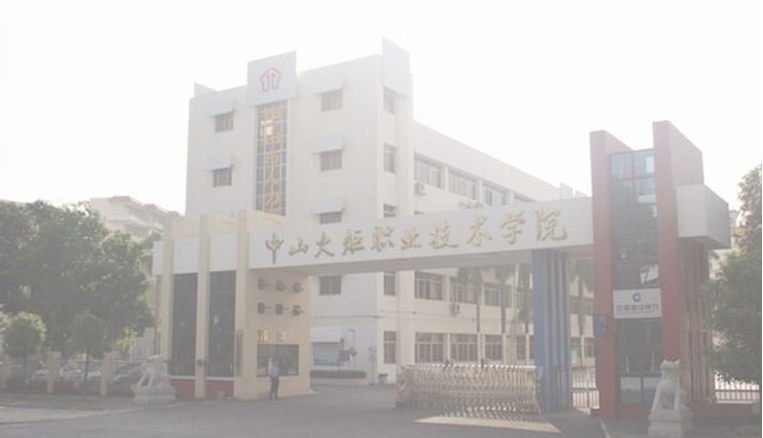

中山火炬职业技术学院创办于2004年4月，直属中山市人民政府，并由市政府委托中山火炬高技术产业开发区管理。中山高新区的七大国家级产业基地、五大主题产业、四大新兴产业、1000余家企业为学院提供了丰富的实习实训资源，为毕业生提供了优质多元的就业岗位。
学院于2009年9月顺利通过教育部人才培养工作评估。目前，拥有两个中央财政支持的实训基地：包装印刷实训基地、装备制造实训基地，是中国高新区（现代装备制造与汽车技术）人才指定培养基地。校企深度融合的“中山火炬模式”受到国家教育部、广东省政府、省教育厅的高度关注。2010年，学院获批成为广东省示范性高职院校和国家骨干高职院校立项建设单位，同时也是国家职业教育体制机制改革探索试点单位，是广东省构建现代职业教育体系试点任务的三所院校之一。2011年，被广东省政府评为“职业教育先进集体”。